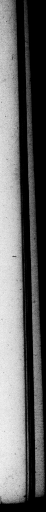

D. OCTAV. AUGUST. n influemee of which, I Theogenes, adomvitque eum. Tantam mon fiduciam fati N 95. Poſt necem Cefaris reverſo ab Apollonia & ine eo urbem, repente I quido ac puro Tereno, circulus ad. ſpecis orbem Solis ambiit : ac ſubinde Juliz Cæſaris filiz.monumentum fulmine ictum eſt. Primo autem conſulatu ei au gurium capienti, duodecim be vultures, ut Romnlo, oftenderant : & immolantt omnium victimarum jocinora replicata intrinſecus ab ima tibra paruerunt : nemine peritorum aliter conjectante, quam læta per hec & maga portendi. 96. Quin & bellorum omnium eventus ante preſenſir. Contractis ad oniam Triumvirorum copi is, aquila tentorio ejus ſuperſedens, duos corvos hinc & inde inſeſtantes afflixit, & 44 terram dedit: notante onni exercitu, futuram quandoque inter collegas diſcordiam talem, qualis ſecuta eſt, ac exitum pre» fagicnte, In Philippis, Theſ: ſalus quidam de futura vietoria nuntiavit, auctore D. Cxſare, cujus fibi ſpecies i tinere avio occurriſſer, Circa Peruſiam ſacrific io non litante, cum augeri haſtias imaſſet : ac ſubita eruptione oſtes omnem rei divinæ apparatum abſtuliſſent: conſtitit inter haruſpices, quæ per iculoſa & adverſa ſacrificant i Jenuntiata eſſent, cunca in illos recaſura qui exta haberent. Neque . e· venit, Pridie quam Sicilienſem pugnam claſſe committeret, Geambulanti in littore piſcis & mari exſiluit, & ad pedes Jacuit, Apud Actium elcendenti in aciem, aſellus cum aſinario occurrit: Eutychus, homini; beſtiz Nicon, Auguſtus habuft) ut thema ſuum vulgaverit, nummurfiqy arge u nord fi eris Capricortif, quo natus g. 9 ö iem cæleſtis arcus the obſervation of omens in his fit e yulturs preſented 1 the latter ef which was called 115 Was . 95. After the death of Ceſar, upon W to 2. ooh he was en tering the. city, 0 _ and. bright . y* bow, ſurroun 5 OY 40 ia ar s Lg . 4 . with 114 As he was prog for themelves, as they had done to Ronutus. Jos ; E cered . the livers of all the victims wee ru inward in the lower part ; , which was agreed by all preſent, that had Skill in things of that nature, to be an undoubted prog noſtic of wonderful fortune. bo k my 96. He had certainly 4 fore ſight of the iſſue of Nor When the tromps of the Triumviri were drawn toFer her about Pononia, an eagle that ſat on his tent, mawled and knocks down to the ground, two crows that attacked him on each ſide, in the view: of the whole army; who S from thence that there would be 4 difference among ſt the three colleagues, and attended with the like event, which arcordingly came t6-paſs. At Philippi he was aſſured of ſucceſs by a Theſſalian, who pretended to have it 1 Ceſar himſelf, that had appeared to him, as he was travelling in ſome by-road, At P:ruſia, the ſaerifice not preſenting any favourable intimations at all, but the contrary, he ordered victim after victim to be cut up; but the enemy by a ſudden ſally ſweeping all, it was + agreed among ft the men of ill in that way then attending, that all the danger and misfortune, that appeared in the entrails, would certainly fall upon the heads of thoſe that had got them, And accordingly it fell out. The day before the ſea-fight near Sicily, as he was walking upon the ſhore, a fiſh leaped out F the ſea, and laid at his feet. At Atium, as he was going down to his fleet in order to fight the enemy, an aſs met him with a fell driving & er
